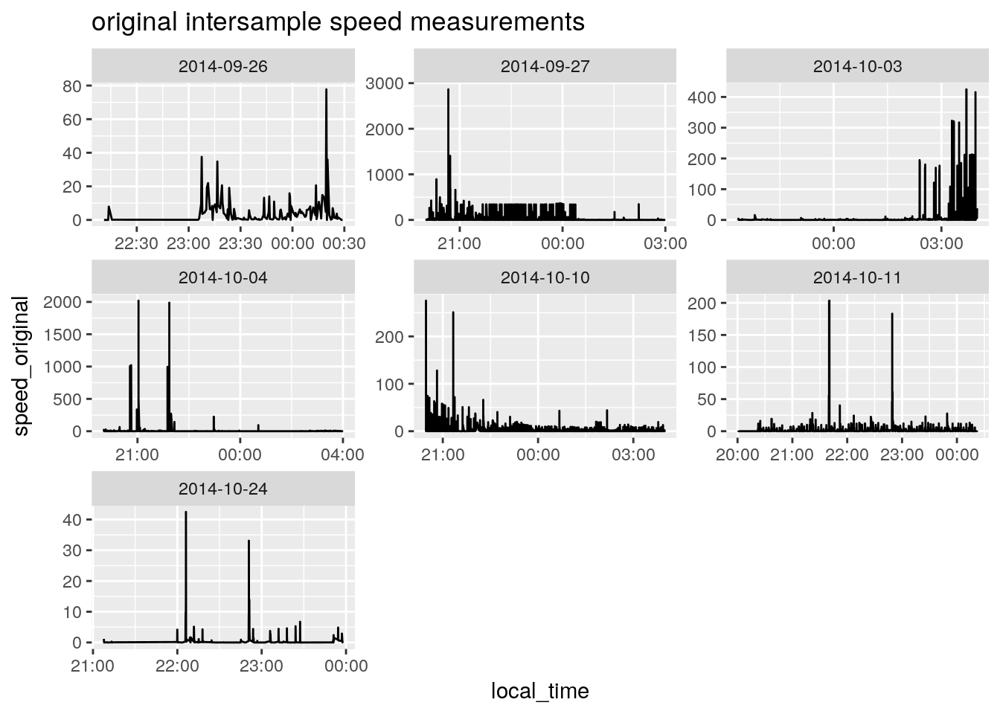
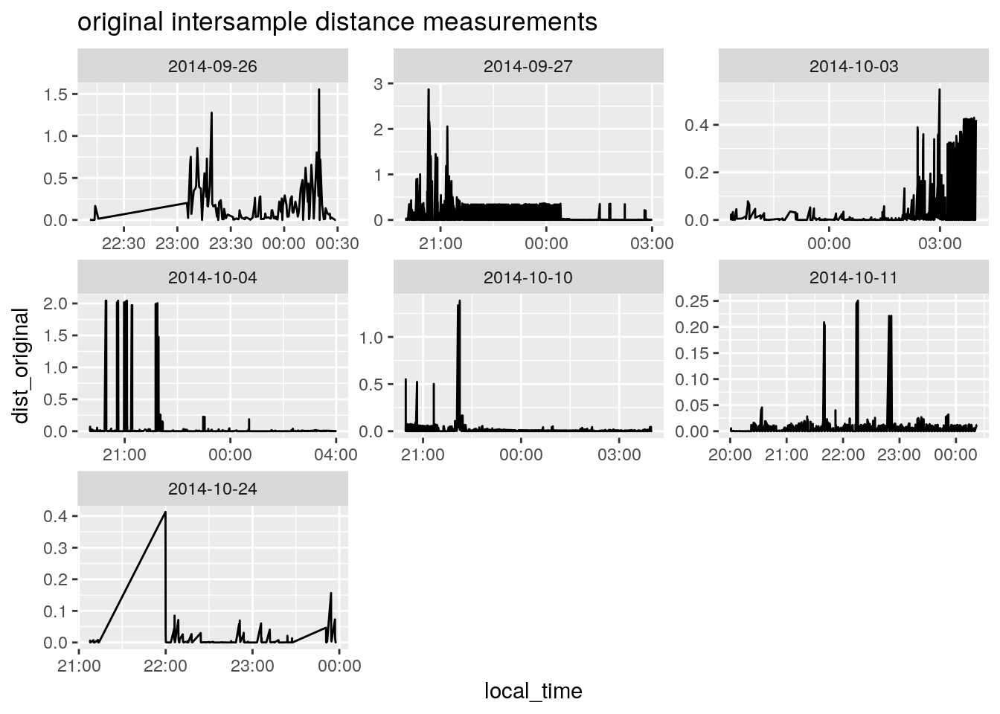
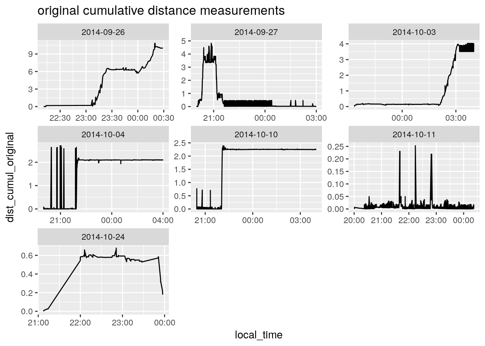
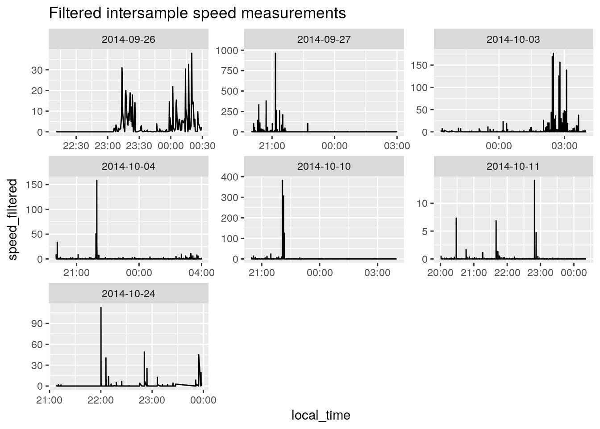
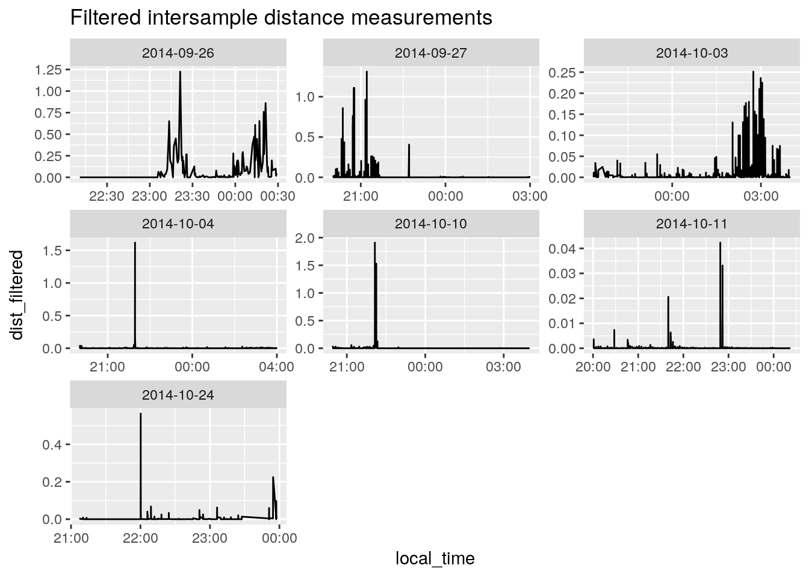
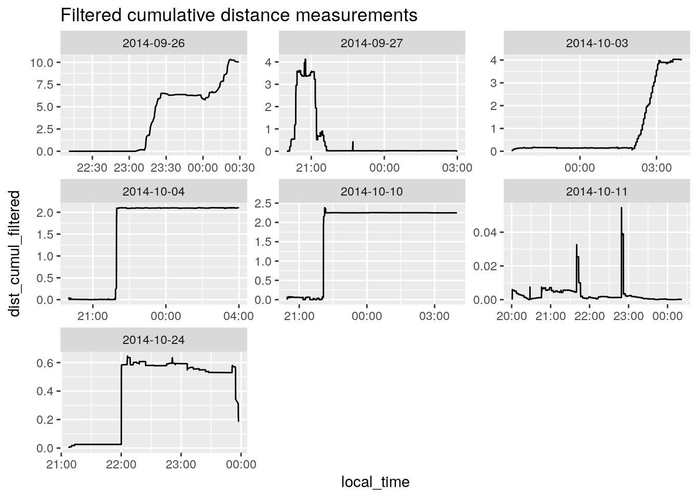
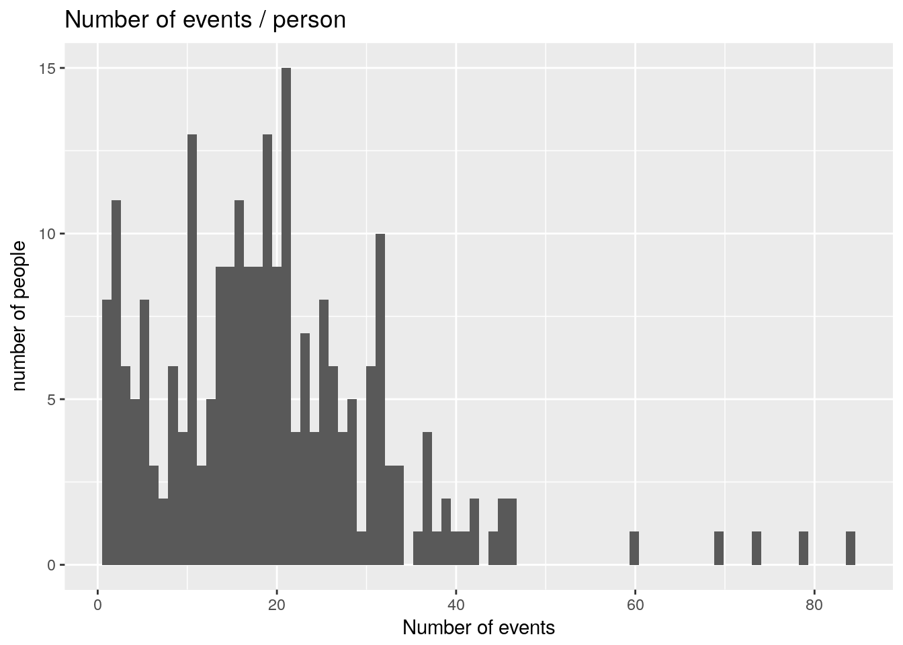

Initial Analysis
Last updated: 2018-08-06
workflowr checks: (Click a bullet for more information)-
✖ R Markdown file: uncommitted changes
The R Markdown is untracked by Git. To know which version of the R Markdown file created these results, you’ll want to first commit it to the Git repo. If you’re still working on the analysis, you can ignore this warning. When you’re finished, you can runwflow_publishto commit the R Markdown file and build the HTML. -
✔ Environment: empty
Great job! The global environment was empty. Objects defined in the global environment can affect the analysis in your R Markdown file in unknown ways. For reproduciblity it’s best to always run the code in an empty environment.
-
✔ Seed:
set.seed(20180727)The command
set.seed(20180727)was run prior to running the code in the R Markdown file. Setting a seed ensures that any results that rely on randomness, e.g. subsampling or permutations, are reproducible. -
✔ Session information: recorded
Great job! Recording the operating system, R version, and package versions is critical for reproducibility.
-
Great! You are using Git for version control. Tracking code development and connecting the code version to the results is critical for reproducibility. The version displayed above was the version of the Git repository at the time these results were generated.✔ Repository version: addee5d
Note that you need to be careful to ensure that all relevant files for the analysis have been committed to Git prior to generating the results (you can usewflow_publishorwflow_git_commit). workflowr only checks the R Markdown file, but you know if there are other scripts or data files that it depends on. Below is the status of the Git repository when the results were generated:
Note that any generated files, e.g. HTML, png, CSS, etc., are not included in this status report because it is ok for generated content to have uncommitted changes.Ignored files: Ignored: data/ldr/ Ignored: data/sql_load/ Ignored: data/summary/ Ignored: docs/figure/ Ignored: explore/ Untracked files: Untracked: analysis/initial.Rmd Untracked: csv2db.R Untracked: lib/ Untracked: q Unstaged changes: Modified: .gitignore
source('lib/functions.R')
source('lib/get_data.R')
library(tsibble)
library(lubridate)
library(sp)
library(tidyquant)
read.csv('data/EveningMasterFullAnonym.csv') %>%
as.tibble %>%
{ . } -> df_all
my_db_read( 'select * from location_rr') %>%
as.tibble() %>%
{ . } -> df_location
my_db_read( 'select * from passivelocation_rr') %>%
as.tibble() %>%
{ . } -> df_passive_locationhow clean is the gps data - Plan
- for each person / night, what is the range of distance between successive gps points
- what are the different attributes of gps data (passive/active, etc)
Data preperation
merge in passive location
passive location is just as good as active location (but mostly duplicated, we will come to that later
df_location %<>% bind_rows( df_passive_location )data cleaning
- eliminate duplicates - many duplicate locations at a time stamp. Keep most accurate location at a time stamp
- many locations at north pole, markedly wrong. Eliminate them.
- calculate interval between timestamps
df_location %>%
mutate( my_accuracy = ifelse( longitude >10 | latitude <40, 1, 0),
night = as.factor(night)) %>%
arrange( night, local_time, my_accuracy, accuracy ) %>%
mutate( id=row_number() ) %>%
group_by( night, local_time ) %>%
filter( id == min(id ) ) %>%
filter( my_accuracy == 0 ) %>%
select( -my_accuracy ) %>%
ungroup() %>%
group_by( night ) %>%
mutate( interval = difference( local_time, 1 )) %>%
ungroup() %>%
{ . } -> df_best_locationcalculate distance
- calculate distance between successive best guess locations
- calculate speed based on interval and distance, in m/sec
calc_interval_distance = function( longitude, latitude ) {
c( longitude, latitude ) %>%
matrix( ncol = 2 ) %>%
spDists( segments=TRUE, longlat=TRUE) %>%
c(0,.)
}
calc_distance_from_start = function( longitude, latitude ) {
c( longitude, latitude ) %>%
matrix( ncol = 2 ) %>%
spDistsN1(., .[1,], longlat=TRUE)
}
df_best_location %>%
group_by( night ) %>%
mutate( dist = calc_interval_distance(longitude, latitude),
speed = dist/interval * 1000) %>% # in m/sec
select( interval, dist, speed, accuracy, bearing, everything()) %>%
{ . } -> df_filtered_locationInaccurate GPS investigation
Sometimes, the person ‘moves’ very quickly; for example, many samples where speed > 100. This has to be related to measurement issues
GPS has problems. There are several solutions 1. delete out of bounds measurements 1. average successive points (eg moving average) 1. use median of successive points (https://gis.stackexchange.com/a/245009/70843) 1. eliminate changes in location where accellerometer clearly states that the phone is not moving 1. Calculate Euclidean minimum spanning tree of points: 1. use a kalman filter, which would use more of teh sensor data. Difficult. Here is an impllementation for android (https://blog.maddevs.io/reduce-gps-data-error-on-android-with-kalman-filter-and-accelerometer-43594faed19c)
For this initial work, I use the median 7 filter
df_best_location %>%
group_by( userid, night ) %>%
mutate(
latitude_median = rollapplyr( latitude, 7, median, partial = TRUE ),
longitude_median = rollapplyr( longitude, 7, median, partial = TRUE ),
dist_original = calc_interval_distance(longitude, latitude),
dist_cumul_original = calc_distance_from_start(latitude, longitude),
speed_original = dist_original/interval * 1000, # in m/sec
dist_filtered = calc_interval_distance(latitude_median, longitude_median ),
dist_cumul_filtered = calc_distance_from_start(latitude_median, longitude_median ),
speed_filtered = dist_filtered/interval * 1000) %>% # in m/sec
select( interval, dist_filtered, speed_filtered, accuracy, bearing, everything()) %>%
{ . } -> df_filtered_locationDistance sanity checking
df_filtered_location %>% filter( dist_original >10 ) %>% head(10) %>% kable()interval dist_filtered speed_filtered accuracy bearing userid night time_stamp timezone source latitude longitude speed provider local_time id latitude_median longitude_median dist_original dist_cumul_original speed_original dist_cumul_filtered ——— ————– ————— ——— ——– ——- —— ———– ——— ——- ——— ———- —— ——— ———– — —————- —————– ————– ——————– ————— ——————–
top 10 raw lat and long points
df_filtered_location %>% ungroup() %>% count( longitude, latitude, sort=TRUE) %>% head(10) %>% kable()| longitude | latitude | n |
|---|---|---|
| 6.641538 | 46.58672 | 100 |
| 6.641790 | 46.58663 | 66 |
| 6.626204 | 46.52211 | 55 |
| 6.644990 | 46.58474 | 19 |
| 6.644990 | 46.58474 | 19 |
| 6.644990 | 46.58474 | 19 |
| 6.630602 | 46.55331 | 14 |
| 6.641412 | 46.58676 | 14 |
| 6.644871 | 46.58474 | 14 |
| 6.658875 | 46.59766 | 14 |
distance exploration
ggplot(df_filtered_location, aes( latitude )) + geom_histogram()`stat_bin()` using `bins = 30`. Pick better value with `binwidth`.
ggplot(df_filtered_location, aes( longitude )) + geom_histogram()`stat_bin()` using `bins = 30`. Pick better value with `binwidth`.
ggplot(df_filtered_location, aes( dist_original )) +
geom_histogram() +
scale_y_log10() +
xlab( 'range of original distances in km between successive points')`stat_bin()` using `bins = 30`. Pick better value with `binwidth`.Warning: Transformation introduced infinite values in continuous y-axisWarning: Removed 10 rows containing missing values (geom_bar).
ggplot(df_filtered_location, aes( speed_filtered )) +
geom_histogram() +
scale_y_log10() +
xlab('speed in m/sec between successive filtered points')`stat_bin()` using `bins = 30`. Pick better value with `binwidth`.Warning: Removed 7 rows containing non-finite values (stat_bin).Warning: Transformation introduced infinite values in continuous y-axisWarning: Removed 17 rows containing missing values (geom_bar).
ggplot(df_filtered_location, aes( y=speed_filtered, x=night )) +
geom_violin() +
geom_boxplot(width=0.1)+
scale_y_log10() +
xlab('speed in m/sec') +
ggtitle( 'Range of filtered speeds per night, log scale, outliers dropped')Warning: Transformation introduced infinite values in continuous y-axisWarning: Transformation introduced infinite values in continuous y-axisWarning: Removed 1763 rows containing non-finite values (stat_ydensity).Warning: Removed 1763 rows containing non-finite values (stat_boxplot).
Demonstrations of cleaned and uncleaned data
First, the number of points/ night Number with speed > 100 m/s
df_filtered_location %>% filter( speed_filtered > 100 ) %>% count()# A tibble: 5 x 3
# Groups: userid, night [5]
userid night n
<chr> <fct> <int>
1 39146290-ed15-4ca3-9f00-ce935128c1a6 2014-09-27 14
2 39146290-ed15-4ca3-9f00-ce935128c1a6 2014-10-03 5
3 39146290-ed15-4ca3-9f00-ce935128c1a6 2014-10-04 1
4 39146290-ed15-4ca3-9f00-ce935128c1a6 2014-10-10 3
5 39146290-ed15-4ca3-9f00-ce935128c1a6 2014-10-24 1df_filtered_location %>%
ggplot( ) + geom_line( aes( local_time, speed_original )) +
facet_wrap( ~night , scales='free') +
ggtitle( "original intersample speed measurements" )Warning: Removed 1 rows containing missing values (geom_path).
df_filtered_location %>%
ggplot( ) + geom_line( aes( local_time, dist_original )) +
facet_wrap( ~night , scales='free') +
ggtitle( "original intersample distance measurements" )
df_filtered_location %>%
ggplot( ) + geom_line( aes( local_time, dist_cumul_original )) +
facet_wrap( ~night , scales='free') +
ggtitle( "original cumulative distance measurements" )
df_filtered_location %>%
ggplot( ) + geom_line( aes( local_time, speed_filtered )) +
facet_wrap( ~night , scales='free') +
ggtitle( "Filtered intersample speed measurements" )Warning: Removed 1 rows containing missing values (geom_path).
df_filtered_location %>%
ggplot( ) + geom_line( aes( local_time, dist_filtered )) +
facet_wrap( ~night , scales='free') +
ggtitle( "Filtered intersample distance measurements" )
df_filtered_location %>%
ggplot( ) + geom_line( aes( local_time, dist_cumul_filtered )) +
facet_wrap( ~night , scales='free') +
ggtitle( "Filtered cumulative distance measurements" )
basic Stats
df_all %>%
count(user) %>%
ggplot( aes( n )) +
geom_histogram( bins=80) +
ggtitle( 'Number of events / person') +
xlab("Number of events") +
ylab("number of people")
df_all %>%
select( starts_with( 'tom')) %>% names() [1] "tomorrow_id" "tom_timestamp"
[3] "tom_timezone_id" "tom_timezone_display_name"
[5] "tom_timezone_raw_offset" "tom_consequence_drankmore"
[7] "tom_consequence_driving" "tom_consequence_fight"
[9] "tom_consequence_hangover" "tom_consequence_injured"
[11] "tom_consequence_memoryloss" "tom_consequence_regret"
[13] "tom_consequence_sexatrisk" "tom_consequence_spentmore"
[15] "tom_nb_drinks_last_night" df_all %>%
select( ends_with( 'stamp')) %>% names()[1] "pre_timestamp" "load_timestamp" "forg_timestamp" "dq_timestamp"
[5] "tom_timestamp" "env_timestamp" "video_timestamp"df_all %>% names() [1] "id"
[2] "user"
[3] "evening"
[4] "day"
[5] "intention_id"
[6] "loading_id"
[7] "episode_id"
[8] "type"
[9] "episod_id"
[10] "episod_drink_survey"
[11] "episod_ambiance_survey"
[12] "episod_video_survey"
[13] "forgotten_id"
[14] "tomorrow_id"
[15] "warning"
[16] "episod_episode"
[17] "episod_picture_file_exists"
[18] "episod_video_done"
[19] "episod_video_url"
[20] "episod_video_file_exits"
[21] "episod_warning"
[22] "pre_timestamp"
[23] "pre_timezone_id"
[24] "pre_timezone_display_name"
[25] "pre_timezone_raw_offset"
[26] "pre_beer_cider"
[27] "pre_coffee_tee"
[28] "pre_cocktail_alcopops"
[29] "pre_energy"
[30] "pre_fruit_juice"
[31] "pre_liqueur_aperitive"
[32] "pre_milky"
[33] "pre_shots"
[34] "pre_soft_drinks"
[35] "pre_spirits"
[36] "pre_water"
[37] "pre_wine_champagne"
[38] "load_timestamp"
[39] "load_timezone_id"
[40] "load_timezone_display_name"
[41] "load_timezone_raw_offset"
[42] "load_beer_cider"
[43] "load_coffee_tee"
[44] "load_cocktail_alcopops"
[45] "load_energy"
[46] "load_fruit_juice"
[47] "load_liqueur_aperitive"
[48] "load_milky"
[49] "load_shots"
[50] "load_soft_drinks"
[51] "load_spirits"
[52] "load_water"
[53] "load_wine_champagne"
[54] "forg_timestamp"
[55] "forg_timezone_id"
[56] "forg_timezone_display_name"
[57] "forg_timezone_raw_offset"
[58] "forg_beer_cider"
[59] "forg_coffee_tee"
[60] "forg_cocktail_alcopops"
[61] "forg_energy"
[62] "forg_fruit_juice"
[63] "forg_liqueur_aperitive"
[64] "forg_milky"
[65] "forg_shots"
[66] "forg_soft_drinks"
[67] "forg_spirits"
[68] "forg_water"
[69] "forg_wine_champagne"
[70] "dq_timestamp"
[71] "dq_timezone_id"
[72] "dq_timezone_display_name"
[73] "dq_timezone_raw_offset"
[74] "dq_drink_alcool"
[75] "dq_drink_glass"
[76] "dq_drink_name"
[77] "dq_env_light_percent"
[78] "dq_env_people_percent"
[79] "dq_env_sound_percent"
[80] "dq_social_family_members_counter"
[81] "dq_social_female_friends_colleagues_counter"
[82] "dq_social_male_friends_colleagues_counter"
[83] "dq_social_other_people_counter"
[84] "dq_social_partner_spouse_counter"
[85] "dq_imageFileName"
[86] "tom_timestamp"
[87] "tom_timezone_id"
[88] "tom_timezone_display_name"
[89] "tom_timezone_raw_offset"
[90] "tom_consequence_drankmore"
[91] "tom_consequence_driving"
[92] "tom_consequence_fight"
[93] "tom_consequence_hangover"
[94] "tom_consequence_injured"
[95] "tom_consequence_memoryloss"
[96] "tom_consequence_regret"
[97] "tom_consequence_sexatrisk"
[98] "tom_consequence_spentmore"
[99] "tom_nb_drinks_last_night"
[100] "env_timestamp"
[101] "env_timezone_id"
[102] "env_timezone_display_name"
[103] "env_timezone_raw_offset"
[104] "env_artsy_percent"
[105] "env_dingy_percent"
[106] "env_formal_percent"
[107] "env_loud_percent"
[108] "env_oldfashioned_percent"
[109] "env_romantic_percent"
[110] "env_sophisticated_percent"
[111] "env_trendy_percent"
[112] "env_upscale_percent"
[113] "env_place_city"
[114] "env_place_id_name"
[115] "env_place_type"
[116] "video_timestamp"
[117] "video_timezone_id"
[118] "video_timezone_display_name"
[119] "video_timezone_raw_offset"
[120] "video_no_video_reason_ethical"
[121] "video_no_video_reason_legal"
[122] "video_no_video_reason_other"
[123] "video_no_video_reason_safety"
[124] "video_no_video_reason_social"
[125] "video_videoAvailable"
[126] "video_videoFileName"
[127] "video_imageFileName"
[128] "city"
[129] "city_str"
[130] "time_baseline"
[131] "dem1"
[132] "dem2"
[133] "dem3"
[134] "dem4"
[135] "dem5"
[136] "dem6"
[137] "dem7"
[138] "out1"
[139] "out2"
[140] "out3"
[141] "out4a"
[142] "out4b"
[143] "out4c"
[144] "out4d"
[145] "out4e"
[146] "out4f"
[147] "out5"
[148] "out6_1"
[149] "out7_1"
[150] "out8_1"
[151] "out9_1a"
[152] "out9_1b"
[153] "out9_1c"
[154] "out9_1d"
[155] "out9_1e"
[156] "out10_1a"
[157] "out10_1b"
[158] "out10_1c"
[159] "out10_1d"
[160] "out10_1e"
[161] "out10_1f"
[162] "out10_1g"
[163] "out10_1h"
[164] "out10_1i"
[165] "out10_1j"
[166] "out10_1k"
[167] "out10_1l"
[168] "out10_1m"
[169] "out6_2"
[170] "out7_2"
[171] "out8_2"
[172] "out9_2a"
[173] "out9_2b"
[174] "out9_2c"
[175] "out9_2d"
[176] "out9_2e"
[177] "out10_2a"
[178] "out10_2b"
[179] "out10_2c"
[180] "out10_2d"
[181] "out10_2e"
[182] "out10_2f"
[183] "out10_2g"
[184] "out10_2h"
[185] "out10_2i"
[186] "out10_2j"
[187] "out10_2k"
[188] "out10_2l"
[189] "out10_2m"
[190] "out6_3"
[191] "out7_3"
[192] "out8_3"
[193] "out9_3a"
[194] "out9_3b"
[195] "out9_3c"
[196] "out9_3d"
[197] "out9_3e"
[198] "out10_3a"
[199] "out10_3b"
[200] "out10_3c"
[201] "out10_3d"
[202] "out10_3e"
[203] "out10_3f"
[204] "out10_3g"
[205] "out10_3h"
[206] "out10_3i"
[207] "out10_3j"
[208] "out10_3k"
[209] "out10_3l"
[210] "out10_3m"
[211] "per1a"
[212] "per1b"
[213] "per1c"
[214] "per1d"
[215] "per1e"
[216] "per1f"
[217] "per1g"
[218] "per1h"
[219] "per1i"
[220] "per1j"
[221] "alc1"
[222] "alc2"
[223] "alc3a"
[224] "alc3b"
[225] "alc3c"
[226] "alc3d"
[227] "alc3e"
[228] "alc3f"
[229] "alc3g"
[230] "alc4a"
[231] "alc4b"
[232] "alc4c"
[233] "alc4d"
[234] "alc4e"
[235] "alc5"
[236] "mot1"
[237] "mot2"
[238] "mot3"
[239] "mot4"
[240] "mot5"
[241] "mot6"
[242] "mot7"
[243] "mot8"
[244] "mot9"
[245] "mot10"
[246] "mot11"
[247] "mot12"
[248] "mot13"
[249] "mot14"
[250] "mot15"
[251] "mot16"
[252] "pre1"
[253] "pre2a"
[254] "pre2b"
[255] "pre2c"
[256] "pre2d"
[257] "pre2e"
[258] "pre2f"
[259] "pre2g"
[260] "pre2h"
[261] "pre2i"
[262] "pre2j"
[263] "pre2k"
[264] "pre2l"
[265] "pre2m"
[266] "pre2n"
[267] "pre2o"
[268] "pre2p"
[269] "pre2q"
[270] "pre2r"
[271] "pre2s"
[272] "pre2t"
[273] "pre2u"
[274] "pre2v"
[275] "pre2w"
[276] "pre2x"
[277] "mob1"
[278] "mob2"
[279] "mob3"
[280] "mob4"
[281] "mob5"
[282] "mob6"
[283] "mob7a"
[284] "mob7b"
[285] "mob7c"
[286] "mob7d"
[287] "mob7e"
[288] "net1a"
[289] "net1b"
[290] "net1c"
[291] "net2a"
[292] "net2b"
[293] "net2c"
[294] "net3a"
[295] "net3b"
[296] "net3c"
[297] "net4a"
[298] "net4b"
[299] "net4c"
[300] "net5a"
[301] "net5b"
[302] "net5c"
[303] "net6a"
[304] "net6b"
[305] "net6c"
[306] "net7a"
[307] "net7b"
[308] "time_discharge"
[309] "rec1"
[310] "rec2"
[311] "rec3"
[312] "rec4"
[313] "rec5"
[314] "exp1"
[315] "exp2"
[316] "exp3"
[317] "exp4"
[318] "exp5"
[319] "exp6"
[320] "exp7"
[321] "exp8"
[322] "eval1"
[323] "eval2"
[324] "eval3"
[325] "eval4"
[326] "eval5"
[327] "eval6"
[328] "eval7"
[329] "eval8"
[330] "eval9"
[331] "eval10"
[332] "eval11"
[333] "eval12"
[334] "eval13"
[335] "eval14"
[336] "eval15"
[337] "alc1_dis"
[338] "alc3a_dis"
[339] "alc3b_dis"
[340] "alc3c_dis"
[341] "alc3d_dis"
[342] "alc3e_dis"
[343] "alc3f_dis"
[344] "alc3g_dis"
[345] "alc5_dis"
[346] "pre1_dis"
[347] "out5_dis"
[348] "fin1"
[349] "fin2"
[350] "fin3"
[351] "cons1"
[352] "cons2"
[353] "cons3"
[354] "cons4"
[355] "cons5"
[356] "cons6"
[357] "cons7"
[358] "cons8"
[359] "cons9"
[360] "cons10"
[361] "cons11"
[362] "cons12"
[363] "cons13"
[364] "cons14"
[365] "out1_dis"
[366] "out7"
[367] "out10_1a_dis"
[368] "out10_1e_dis"
[369] "out10_1f_dis"
[370] "out10_1g_dis"
[371] "out10_1h_dis"
[372] "out10_1i_dis"
[373] "out10_1k_dis"
[374] "out10_1l_dis"
[375] "out10_1m_dis"
[376] "app1"
[377] "app2"
[378] "app3" # for each file df_best_location %>%
as.tsibble( key=id( userid, night),
index=local_time,
regular=FALSE
) %>%
{ . } -> ts_locationSession information
sessionInfo()R version 3.4.4 (2018-03-15)
Platform: x86_64-pc-linux-gnu (64-bit)
Running under: Ubuntu 17.10
Matrix products: default
BLAS: /usr/lib/x86_64-linux-gnu/openblas/libblas.so.3
LAPACK: /usr/lib/x86_64-linux-gnu/libopenblasp-r0.2.20.so
locale:
[1] LC_CTYPE=en_AU.UTF-8 LC_NUMERIC=C
[3] LC_TIME=en_AU.UTF-8 LC_COLLATE=en_AU.UTF-8
[5] LC_MONETARY=en_AU.UTF-8 LC_MESSAGES=en_AU.UTF-8
[7] LC_PAPER=en_AU.UTF-8 LC_NAME=C
[9] LC_ADDRESS=C LC_TELEPHONE=C
[11] LC_MEASUREMENT=en_AU.UTF-8 LC_IDENTIFICATION=C
attached base packages:
[1] stats4 parallel stats graphics grDevices utils datasets
[8] methods base
other attached packages:
[1] bindrcpp_0.2.2 tidyquant_0.5.5
[3] quantmod_0.4-13 TTR_0.23-3
[5] PerformanceAnalytics_1.5.2 xts_0.11-0
[7] zoo_1.8-3 sp_1.3-1
[9] tsibble_0.4.0.9000 keyring_1.1.0
[11] RPostgreSQL_0.6-2 DBI_1.0.0
[13] forcats_0.3.0 dplyr_0.7.6
[15] purrr_0.2.5 readr_1.1.1
[17] tidyr_0.8.1 tibble_1.4.2
[19] ggplot2_2.2.1 tidyverse_1.2.1
[21] multidplyr_0.0.0.9000 IRanges_2.12.0
[23] S4Vectors_0.16.0 BiocGenerics_0.24.0
[25] fuzzyjoin_0.1.4 DataCache_0.9
[27] wrapr_1.5.1 readstata13_0.9.2
[29] lubridate_1.7.4 knitr_1.20
[31] stringr_1.3.1 magrittr_1.5
[33] workflowr_1.1.1 nvimcom_0.9-72
loaded via a namespace (and not attached):
[1] httr_1.3.1 jsonlite_1.5 R.utils_2.6.0
[4] modelr_0.1.2 assertthat_0.2.0 highr_0.7
[7] cellranger_1.1.0 yaml_2.1.19 pillar_1.3.0
[10] backports_1.1.2 lattice_0.20-35 glue_1.3.0
[13] quadprog_1.5-5 digest_0.6.15 rvest_0.3.2
[16] colorspace_1.3-2 htmltools_0.3.6 R.oo_1.22.0
[19] plyr_1.8.4 pkgconfig_2.0.1 broom_0.5.0
[22] haven_1.1.2 scales_0.5.0 whisker_0.3-2
[25] git2r_0.23.0 lazyeval_0.2.1 cli_1.0.0
[28] crayon_1.3.4 readxl_1.1.0 evaluate_0.10.1
[31] R.methodsS3_1.7.1 fansi_0.2.3 nlme_3.1-137
[34] xml2_1.2.0 tools_3.4.4 hms_0.4.2
[37] munsell_0.5.0 compiler_3.4.4 rlang_0.2.1
[40] grid_3.4.4 rstudioapi_0.7 labeling_0.3
[43] rmarkdown_1.10 gtable_0.2.0 curl_3.2
[46] R6_2.2.2 utf8_1.1.4 bindr_0.1.1
[49] rprojroot_1.3-2 Quandl_2.8.0 stringi_1.2.3
[52] Rcpp_0.12.17 tidyselect_0.2.4 This reproducible R Markdown analysis was created with workflowr 1.1.1